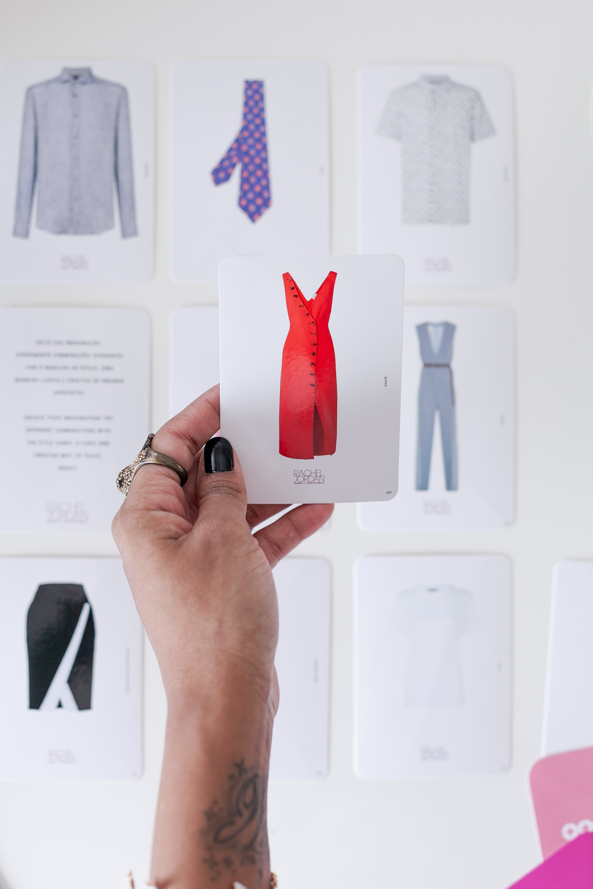
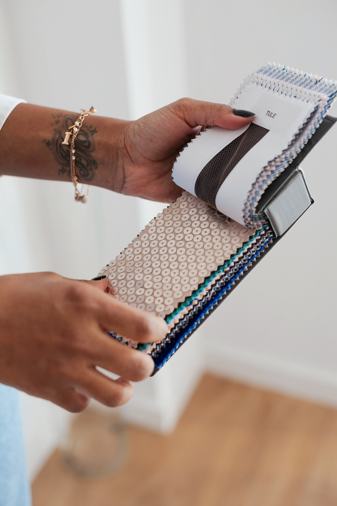

Details Consultoria — Consultoria de Imagem
Cada história pede um olhar diferente.
Orquesto o teu guarda-roupa à volta de decisões claras, para deixares de te vestir ao acaso e passares a dialogar com o que já tens.

O Método Base Estratégica®
A maior parte das pessoas escolhe roupa peça a peça, dia a dia, sem um critério que se repita. O Método Base Estratégica® substitui essa incerteza por um processo que orienta cada decisão, da compra à combinação.
Olhas para o que já tens com critério, não com culpa, e identificas o que realmente sustenta o teu dia a dia.
Aprendes a fazer as peças dialogarem entre si, para cada combinação deixar de depender do acaso ou da inspiração do momento.
Ficas com um critério próprio para decidir o que vestir, o que comprar e o que dispensar, sem depender de mim para a próxima vez.
Sobre mim
Não acredito em fórmulas iguais para todas as pessoas.
Cada história pede um olhar diferente.
Cada roupeiro carrega hábitos, fases, referências, necessidades e escolhas que pertencem a uma pessoa específica. Por isso, o meu trabalho não começa por decidir o que deve entrar ou sair, mas por compreender o que aquela história precisa naquele momento.
Acredito que vestir bem não se resume a comprar mais. Passa por aprender a olhar para aquilo que já temos, perceber como as peças podem conversar entre si, multiplicar possibilidades e construir um roupeiro capaz de acompanhar diferentes momentos da nossa vida.
Sou apologista da versatilidade, da exploração e da multiplicação, mas sempre com respeito pela individualidade de quem chega até mim.
Porque, muitas vezes, a questão não é simplesmente "não sei o que vestir". É perceber o que está por detrás dessa dificuldade. O que faz determinadas escolhas funcionarem, porque outras parecem não resultar e que conhecimentos faltam para começarmos a escolher com mais clareza.
É por isso que acredito que tudo começa muito antes do vestir.
Existem várias camadas até chegarmos à roupa. E quando começamos a explorá-las, não descobrimos apenas novas formas de combinar peças. Desenvolvemos olhar, critério e autonomia.
Para quem é
"Já não quero mais uma opinião sobre o que me fica bem. Quero um critério que seja meu."

Como funciona
Contas-me, em poucas linhas, o que te traz até aqui.
Ajuda-me a perceber o teu ponto de partida antes de falarmos.
Marcas o dia e a hora que melhor te convêm, por Calendly.
Atendimentos
Começa com uma conversa de três minutos, sem compromisso.